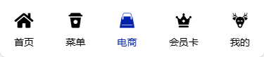
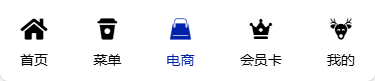

路由综合运用
Router & Route
实验题目
路由设计
实验目的
掌握普通路由、命名路由、重定向路由和嵌套路由的基本使用
掌握单页路由、全站路由的设计与开发
掌握编程路由和路由守卫的常见应用
熟悉路由样式的使用
实验内容
综合运用路由知识，使用声明式导航或编程式导航，完成项目的路由设计与开发
主菜单 MainMenu.vue 对应的路由设计，包括样式
菜单视图 MenuView.vue 的嵌套路由设计，包括样式
详情页 DetailsView.vue 的动态路由设计
产品组件 GoodsItem.vue 到产品详情页 DetailView.vue 的动态路由设计
路由守卫
更新标题
主菜单的控制：显示与否
购物车：定位位置
{
path: "/",
name: "index",
component: HomeView,
meta: { showNav: true, title: "大树小咖" },
}
其它设计
访问量*
页面切换进度条*
面包屑导航*
参考效果和参考代码
面包屑导航*
.创建组件 Breadcrumb.vue
.引入路由
import { useRoute } from 'vue-router';
const route = useRoute();
.使用路由
<div class="bread">
<router-link v-for="(item, index) in route.matched" :key="index" :to="item.path">{{ item.name }}</router-link>
</div>
.仅仅使用路由信息渲染面包屑
<div class="bread">
<div v-for="(item, index) in route.matched" :key="index">{{ item.name }}</div>
</div>
参考效果

 



拓展与思考
根据需要，使用动态路由、查询路由或传参路由传递参数
保存/推送项目到自己的代码仓库*